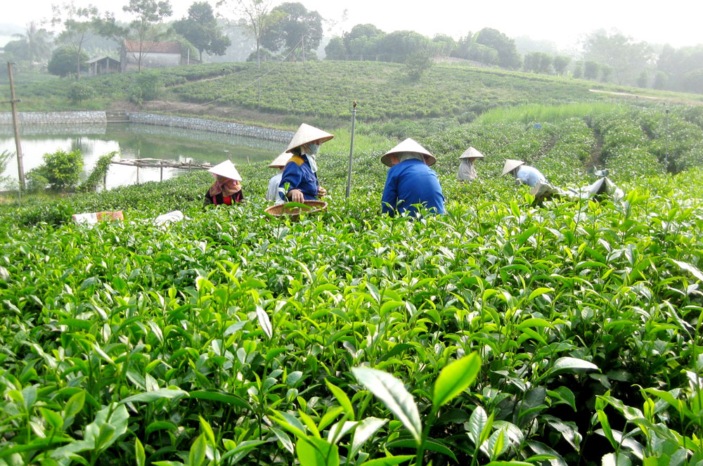
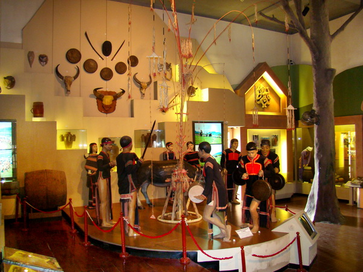
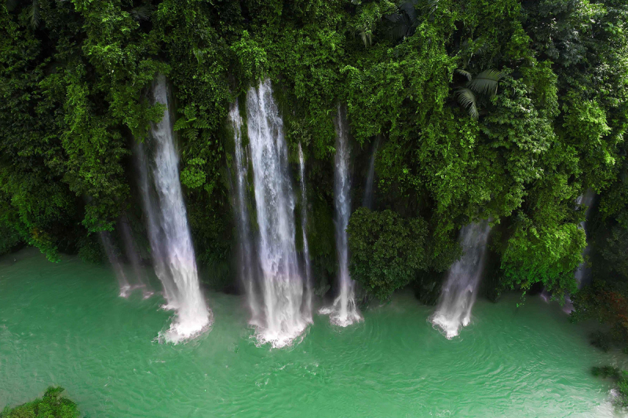

Jan 25
Tan Cuong Tea
This is the most famous type of tea in Thai Nguyen, Vietnam.
Read moreJan 26
Minority Ethnic Museum
There are homes for different ethnic groups in Thai Nguyen
Read moreJan 27
Mua Roi Waterfall
It's a really nice waterfall in summer in Thai Nguyen.
Read more